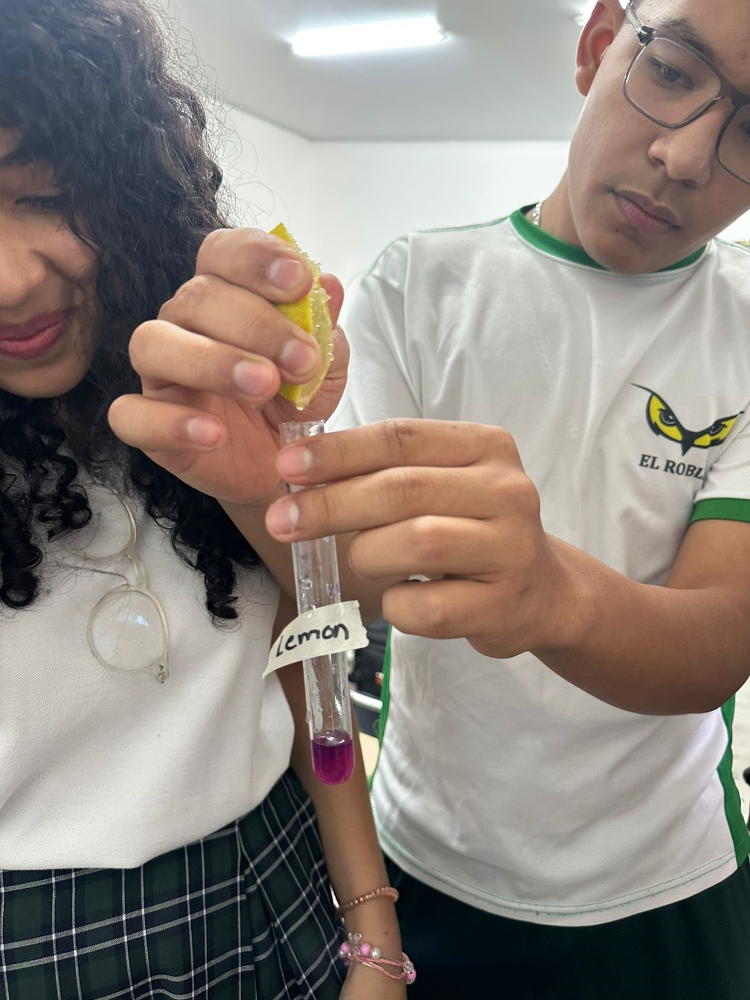

Chemistry experiment
El Roble Academy
Chemistry Lab
By Isabela Carbajal
Introduction
This website explains what we did in our chemistry lab with the "PH" experiment. we used red cabbage juice as natural
way to test if everyday liquids are acidic, neutral or basic. Red cabbage has a pigment called anyhonacyanin that changes
color depending on how it is. The main goal of the experiment was too watch how the colors changed and match them to the Ph
level.

Hypothesis
Hypothesis We though that adding red cabbage juice to different substances it would make them change into a range of colors,
depending on their PH levels. These colors change would help us easily tell if each substance was acidic, basic or neutral and
give us a better understanding on how ph works.